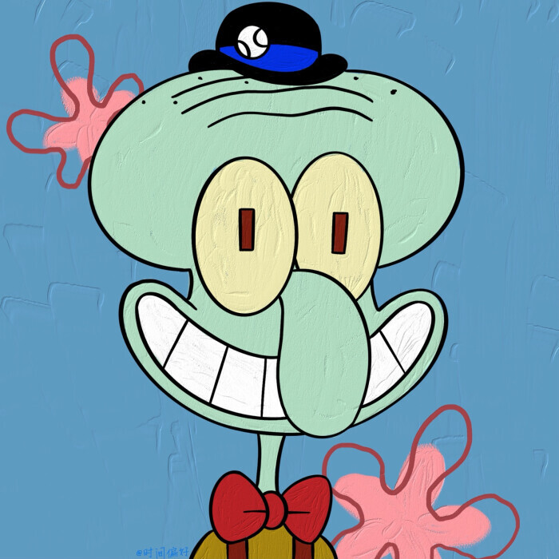

海绵宝宝（SpongeBob SquarePants），美国动画《海绵宝宝》及其衍生作品中的主人公。
生活在太平洋海底一座被称为比奇堡的城市，身份是蟹堡王的高级厨师。黄色长方形海绵，其身体构成如同清洁用海绵。拥有两只手，各四根手指。以棕色短裤、白色衬衫和红色领带为主要服装。身体如果被破坏皆可恢复原状。虽然有正常进食，但纯滤食海水也能继续存活。体力薄弱，且所谓的哑铃其实是绒毛玩具；但随着剧情发展似乎逐渐提升，奇怪的是他在与珊迪用空手道对打时完全看不出体质的薄弱，两人平分秋色。平常喜欢说的口头禅是：“我准备好了”。

珊迪·奇克斯（Sandy Cheeks），美国动画片《海绵宝宝》及其衍生作品中的角色，也是海绵宝宝的好朋友，是来自美国南部的德克萨斯州的雌性松鼠，身兼科学家、探险家和发明家，有诸多个人发明。平时居住在海底下的橡树屋里，平时身穿紫色胸罩混搭紫色短裙和绿色内裤，穿戴白色航空服和头盔以呼吸。

章鱼哥（英文名称：Squidward Tentacles；中文直译：鱿鱼沃德·触手）是美国动画片《海绵宝宝》中的主要角色。蟹堡王的收银员，海绵宝宝的邻居兼同事，一只大鼻子秃脑门章鱼。认为海绵宝宝和派大星很幼稚。相当自恋，有一定的艺术才能但却从未得到赏识，并对艺术有执着的追求。本质上还是一个善良且有正义感的章鱼。
派大星（Patrick Star），美国动画片《海绵宝宝》及其衍生作品中的角色，也是海绵宝宝的好朋友。他是一只粉红色的海星，说话嗓音粗，头脑简单，四肢发达，常给大家制造麻烦，在睡觉或发呆时还会不停的流口水。他居住在自己精心打磨的石头下面，在关键时刻会想出绝妙的点子，但下一秒就已经遗忘，可是在动画片中他却是说出最多饱含深意的话的角色。